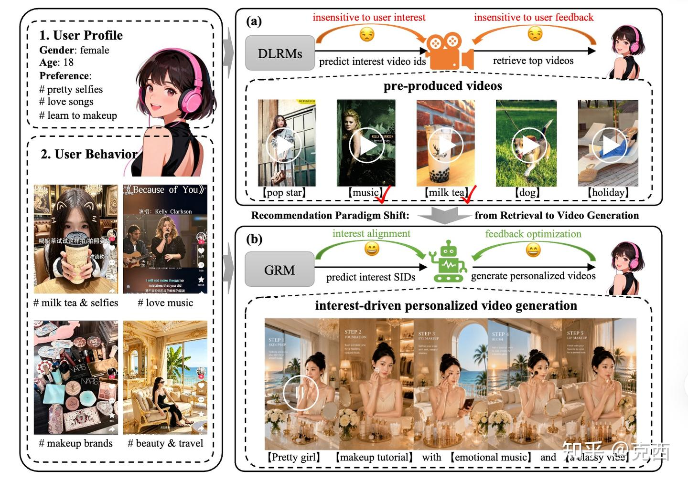
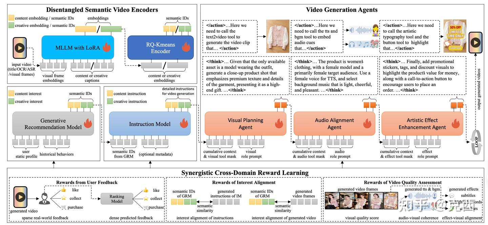

1. 概述
传统短视频推荐系统的基本范式是：
用户兴趣建模 -> 从已有视频池中召回/排序 -> 曝光给用户即使模型从 DLRM 发展到生成式推荐模型 GRM，本质上也仍然是“从已有内容池里选”。GRM 可以把用户兴趣表示成 Semantic ID，甚至用自回归模型预测用户未来可能感兴趣的 SID，但最终通常还是拿这些 SID 去检索已有视频。
这篇论文提出的 Recommendation-as-Generation，简称 RaG：推荐系统不再只负责匹配已有内容，而是根据用户兴趣直接生成个性化视频。
因此它的目标是把推荐系统的输出空间从固定 item pool 扩展到可生成内容空间：
用户行为与画像
-> 预测用户兴趣的离散语义表示
-> 生成面向该兴趣的视频生产指令
-> 调用视频、音频、特效工具生成个性化视频
-> 用真实反馈继续优化推荐与生成推荐模型决定“用户可能想看什么”，生成模型负责“把这个兴趣做成可消费的视频”，线上反馈再反过来约束下一轮兴趣建模和内容生成。
2. 现有推荐范式的缺点
论文认为，现有推荐系统有一个根本瓶颈：内容池先于推荐存在。
在传统系统里，用户兴趣再细，推荐模型也只能从现有视频中找一个相对匹配的结果。如果内容池里没有足够贴合的素材，模型只能退而求其次。这个问题在短视频和广告场景中尤其明显，所以本质上还是一种检索。
- 用户兴趣非常动态，热点、场景、商品诉求都在快速变化。
- 长尾兴趣很难被预先生产的视频覆盖。
- 广告素材不仅要表达商品，还要匹配人群、风格、节奏和转化目标。
- 同一个内容语义可能需要不同创意表达，例如温馨、冲击、专业、生活化。
GRM 虽然已经把推荐建模成 SID 序列生成，但它通常仍然止步于生成检索 key。既然模型已经能预测用户兴趣 SID，为什么不直接把 SID 解码成新视频？
3. 总体架构：用 D-SIDs 打通推荐和生成

RaG 的核心接口是 Disentangled Semantic IDs，简称 D-SIDs。它把一个视频表示成两类离散 token：
D-SIDs = [content SIDs; creative SIDs]其中：
- content SIDs 表示内容语义，例如实体、主题、商品、场景。
- creative SIDs 表示创意语义，例如风格、节奏、氛围、镜头表达。
推荐系统关心的不只是“用户喜欢什么主题”，还包括“用户更吃哪种表达方式”。同样是母婴用品广告，有人偏好真实测评，有人偏好温馨亲子片段，有人偏好强促销信息。如果只用一个混合 SID 表示视频，内容与创意会互相干扰；拆成 content 和 creative 后，模型可以分别学习“兴趣对象”和“表达偏好”。
完整链路可以概括为：
历史视频 v
-> Disentangled Semantic Video Encoder E(v)
-> content SIDs + creative SIDs
用户上下文 c_user
-> GRM 自回归预测用户未来兴趣 D-SIDs
预测 D-SIDs + 商品/广告 metadata
-> Instruction Model 生成 shot-level 视频生产指令
生产指令
-> Video Generation Agents 执行视觉、音频、特效规划
-> 个性化视频从系统视角看，D-SIDs 是推荐和生成之间的中间语言。推荐模型不需要直接输出自然语言 prompt，视频生成模型也不需要理解原始用户行为日志，双方通过同一个离散语义空间协作。
4. D-SIDs：把内容语义和创意语义拆开
4.1 多模态表示学习
论文基于 Qwen2.5-VL-7B-Instruct 构建视频编码器。对每个视频，系统先用内部 dense captioning 模型分别生成两种描述：
content description: 描述实体、主题、商品、场景
creative description: 描述风格、节奏、氛围、镜头语言然后将视频视觉 token 和对应文本描述一起送入 VLM，取最后一层最后 token 的 hidden state，得到两个归一化表示：
\[z_{content}, z_{creative}\]
训练目标由三部分组成：
- content 表示的对比学习损失。
- creative 表示的对比学习损失。
- content 与 creative 的正交约束，减少两种因素互相泄漏。
可以把它理解成一个 factorized representation learning 问题：同一个视频被投影到两个语义空间，一个解释“拍的是什么”，一个解释“怎么拍”。
4.2 离散量化
得到连续表示后，论文对 content 和 creative 表示分别做 RQ-KMeans 残差量化。每一类表示都有独立 codebook，每层 8192 个 code，最终拼接成 D-SIDs。
这一步的意义有两个：
- 对推荐模型友好：GRM 可以像语言模型一样自回归预测 SID token。
- 对生成模型友好：SID 保留了可控语义，可以再被 Instruction Model 解码成生产指令。
实验中，D-SIDs 在语义检索和离散化质量上都明显优于基线。R@1 达到 0.896，高于 Qwen2.5-VL-7B 的 0.769；量化 collision rate 降到 2.62%，而 QARM 是 18.24%。这说明解耦后的 SID 不只是概念漂亮，确实降低了离散编码冲突。
5. GRM：预测用户未来兴趣的 D-SIDs
论文把推荐部分建模为标准自回归序列预测：
\[p(D\text{-}SIDs \mid c_{user}) = \prod_{t=1}^{2L} p(s_t \mid s_{<t}, c_{user})\]
这里的用户上下文包括画像、历史交互、曝光、点击、观看时长、转化等行为信号。GRM 输出的不再是某个 item ID，而是一段 D-SIDs，代表用户下一阶段可能感兴趣的内容语义和创意语义。
和普通生成式推荐最大的区别在于：RaG 不把预测出来的 SID 只当作检索 key，而是把它当作可生成内容的目标语义。
这使得 GRM 的角色从“候选生成器”变成“兴趣规格生成器”。它生成的是未来内容应该满足的语义条件，而不是某个已经存在的视频。
6. Instruction Model：把离散兴趣翻译成视频脚本
D-SIDs 虽然适合推荐模型预测，但不能直接喂给视频生成工具。视频生产需要更明确的指令，例如：
- 镜头里出现什么主体。
- 场景如何切换。
- 节奏是快还是慢。
- 是否需要字幕、贴纸、行动按钮。
- 广告商品如何自然露出。
因此论文引入 Instruction Model，简称 IM。IM 的任务是：
D-SIDs + optional metadata -> shot-level production instructions广告场景中 metadata 很重要，因为生成视频不能只符合用户兴趣，还要表达具体商品与营销主题。没有 metadata 时，模型只根据 D-SIDs 生成泛内容指令。
训练数据来自 Gemini 2.5 Pro 蒸馏。由于没有现成的 “视频-D-SIDs-拍摄脚本” 数据集，论文先对视频抽取 D-SIDs，再用强多模态教师模型生成 shot-level 脚本作为监督。IM 本身用 Qwen3-8B，将 D-SIDs 通过 reverse RQ-KMeans 还原成连续 embedding，再经过 projector 接到 LLM 输入空间。
训练分三阶段：
- 冻结 LLM，只训练 projector，让 D-SIDs embedding 对齐语言空间。
- 联合微调 projector 和 LLM，提高脚本生成质量。
- 用后续奖励学习继续优化。
从结果看，IM 的 decoding fidelity 随数据和模型规模提升：8B + 100K 样本为 0.7760，8B + 1M 样本为 0.8096，32B + 1M 样本为 0.8212。论文最终选择 8B + 1M 作为默认配置，显然是在线成本和效果之间的折中。
7. Video Generation Agents
论文没有用一个 monolithic video generator 直接生成最终视频，而是设计了 Video Generation Agents，简称 VGAs。原因很现实：工业视频生产不是单纯文本到视频，而是一个分层、多工具、多模态协作过程。
VGAs 包含三个角色：
- Visual Planning Agent：做视觉规划，输出分镜、场景片段、布局和时间边界。
- Audio Alignment Agent：做语音、音乐和画面节奏对齐。
- Artistic Effect Enhancement Agent：做字幕、转场、贴纸、行动按钮等后期增强。
三者共享一个 Qwen2.5-32B backbone。角色差异来自：
- 不同 role prompt。
- 不同可访问工具集合。
- 已有上游 agent 输出组成的上下文。
状态可以简化理解为：
S_t = [视频生产指令; 工具描述; 前面 agent 的输出; 当前角色 prompt]这个设计有两个工程好处。
第一，跨模态生产更符合依赖关系。视觉规划先决定叙事和镜头，音频和特效再跟随视觉状态对齐。
第二，append-only 状态天然支持 KV-cache 复用。由于 agent 顺序执行，前面生成的 token 可以留在 cache 里，下游 agent 只需要额外编码自己的 role prompt，从而降低推理开销。
VGAs 还有一个 bounded reflection loop，遵循 Observe -> Think -> Act，最多两轮。这个限制很重要：无限反思在 demo 里好看，在工业推荐里会把延迟打爆。
8. SCRL：把质量、兴趣对齐和真实反馈放进同一个优化框架
RaG 的训练闭环叫 Synergistic Cross-Domain Reward Learning，简称 SCRL。它包含三类奖励。
第一类是视频质量奖励：
R_quality = R_visual + R_audio + R_effect分别衡量视觉质量、音画一致性、特效与画面对齐。
第二类是兴趣对齐奖励：
R_align = R_instr-align + R_rep-align其中 R_instr-align 约束 D-SIDs 与生成指令一致，R_rep-align 约束 D-SIDs 与最终视频表示一致。
第三类是用户反馈奖励：
R_feedback = R_real + R_predR_real 来自真实点击、点赞、收藏、购买等行为，稀疏但可信；R_pred 来自线上排序模型预估，密集但有模型偏差。
关键点在于，论文没有简单把三个奖励加权求和，而是把用户反馈设为主目标，把兴趣对齐和视频质量设为约束：
\[R(y_i) = R_{feedback}(y_i) - \sum_{c \in \{a,q\}} \lambda_c(t) \text{ReLU}(\tau_c - R_c(y_i))\]
直观解释是：系统主要追求真实业务反馈，但如果兴趣对齐或视频质量低于阈值，就施加惩罚。阈值不是拍脑袋设置，而是根据 SFT baseline 的均值和方差校准；不同模块约束强度不同，VGAs 最严格，IM 次之，GRM 更宽松。
优化上使用 GDPO，做 group-relative advantage：
\[A_i = \frac{R(y_i) - \mu(Y)}{\sigma(Y) + \epsilon}\]
这样可以缓解不同奖励尺度不一致的问题，也更适合多候选生成后的相对偏好优化。
9. 工业部署：实时预测兴趣，近线生成视频
论文表示：视频生成太慢，不能直接放进在线推荐主链路。
它采用三段式部署：
- 实时兴趣建模：GRM 在线低延迟预测用户兴趣 SIDs。
- 近线视频生成：IM 和 VGAs 根据高价值 SIDs 批量生成个性化视频。
- 延迟感知 serving：在线请求优先查 SID-indexed cache，命中则直接返回，未命中则用最近邻 SID 视频兜底，并异步补生成。
论文给出的线上延迟很能说明问题：
| 模块 | 部署方式 | 延迟 |
|---|---|---|
| D-SIDs | 近线 | 约 4s |
| GRM | 在线 | 约 100ms |
| IM | 近线 | 约 2.5s |
| VGAs | 近线 | 约 180s |
所以 RaG 当前更准确的定位是：用推荐模型驱动近线内容生产，再把生成结果扩充到在线候选池。这不是缺点，反而是它能在 4 亿 DAU 级平台落地的关键。
10. 实验结果
以广告收入为指标：
| 方法 | 相对 DLRM baseline | 相对 GRM baseline |
|---|---|---|
| GRM baseline | +3.526% | - |
| GRM + D-SIDs | +4.460% | +0.902% |
| Full RaG | +5.462% | +1.870% |
这个结果可以拆成两层理解。
第一，D-SIDs 本身就能增强生成式推荐。仅把普通 SID 换成内容/创意解耦的 D-SIDs，就能从 +3.526% 提升到 +4.460%。
第二，真正从“检索”进入“生成”后，Full RaG 相比 GRM baseline 还有 +1.870% 收益。这说明生成出来的新视频不是只增加内容数量，而是带来了可观业务增量。
离线实验也支持这个判断：
- D-SIDs 的 R@1/R@5/R@10 达到 0.896⁄0.985⁄0.994。
- D-SIDs collision rate 为 2.62%，明显低于 QARM 的 18.24%。
- VGAs 相比固定 workflow baseline，自动评分从 62.4⁄62.0 提升到 71.3⁄76.0。
- 自动 GSB win rate 从 28.7% 提升到 70.1%。
- 人工评测 win rate 从 34.4% 提升到 52.9%。
- 加入兴趣对齐奖励后，Interest Alignment Score 从 0.707 提升到 0.828。
RaG 的收益不是单一模块带来的，而是 SID 表示、脚本生成、agentic 生产和奖励闭环叠加后的系统收益。
11. 技术创新
11.1 把推荐输出从 item space 推向 content generation space
过去推荐系统优化的是“在已有候选中找最合适的”。RaG 改成“根据兴趣创造候选”。这会改变内容平台的供给逻辑：推荐不再只是分发系统，也参与内容生产。
11.2 D-SIDs 是一个很强的接口设计
推荐系统和视频生成模型之间最大的问题是语义接口不一致。用户行为日志太离散，prompt 太自然语言化，连续 embedding 又缺少可控性。D-SIDs 介于三者之间：
- 对推荐模型是离散 token。
- 对生成系统是可解码语义。
- 对工程系统是可缓存、可索引、可近邻检索的 key。
这个接口比“直接让 LLM 根据用户历史写 prompt”更可控，也比“只预测 item ID”更开放。
12. 局限
第一，生成成本仍然很高。VGAs 约 180s 的延迟意味着它短期内不能实时按请求生成，只能近线扩充候选池。
第二，奖励系统复杂，且存在 reward hacking 风险。尤其是 R_pred 来自排序模型，可能把排序模型偏差继续反馈给生成策略。
第三，论文的场景主要是广告。广告天然有商品 metadata、转化目标和素材生产预算，因此更适合 RaG。把它迁移到普通内容推荐，收益和成本是否匹配还需要验证。
第四，个性化生成会带来内容生态和安全问题。系统如果过度迎合细粒度兴趣，可能制造更强的信息茧房，也可能生成更难审核的长尾内容。
第五，D-SIDs 的解耦质量很依赖 captioning model、VLM 和量化策略。如果 content/creative 没拆干净，下游 GRM 和 IM 都会继承这个表示噪声。